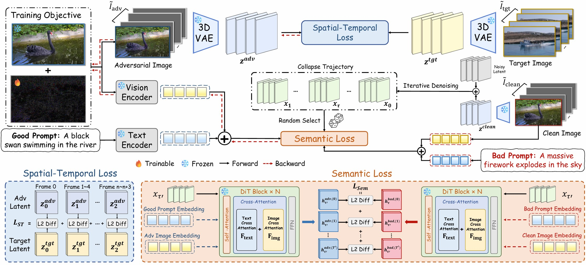
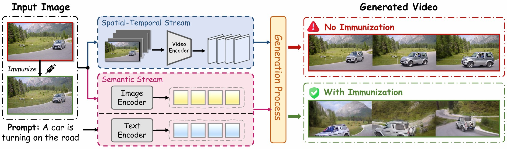

Image-to-video (I2V) generation has the potential for societal harm because it enables the unauthorized animation of static images to create realistic deepfakes. While existing defenses effectively protect against static image manipulation, extending these to I2V generation remains underexplored and non-trivial. In this paper, we systematically analyze why modern I2V models are highly robust against naive image-level adversarial attacks (i.e., immunization). We observe that the video encoding process rapidly dilutes the adversarial noise across future frames, and the continuous text-conditioned guidance actively overrides the intended disruptive effect of the immunization. Building on these findings, we propose the Immune2V framework which enforces temporally balanced latent divergence at the encoder level to prevent signal dilution, and aligns intermediate generative representations with a precomputed collapse-inducing trajectory to counteract the text-guidance override. Extensive experiments demonstrate that Immune2V produces substantially stronger and more persistent degradation than adapted image-level baselines under the same imperceptibility budget.

Immune2V Framework. Our method simultaneously targets the spatial-temporal and semantic streams to ensure persistent disruption. The Spatial-Temporal Attack employs a balanced encoder loss and dense targets to recover vanishing optimization signals across temporal segments. The Semantic Attack hijacks DiT guidance by forcing intermediate representations to mimic a precomputed collapse trajectory, neutralizing the model's iterative semantic correction. Together, these joint perturbations induce severe structural breakdown across the entire generated video.
Clean images generate realistic motion, while immunized images disrupt generation and produce structurally implausible outputs.
Realistic motion.
Severe subject distortion.
Realistic train motion.
Structural collapse.

Realistic synthesis.
Protected input breaks generation.
Reference baseline.
Natural divergence.
Semantic override remains strong.
Disruption is sustained.
@misc{long2026immune2vimageimmunizationdualstream,
title={Immune2V: Image Immunization Against Dual-Stream Image-to-Video Generation},
author={Zeqian Long and Ozgur Kara and Haotian Xue and Yongxin Chen and James M. Rehg},
year={2026},
eprint={2604.10837},
archivePrefix={arXiv},
primaryClass={cs.CV},
url={https://arxiv.org/abs/2604.10837},
}